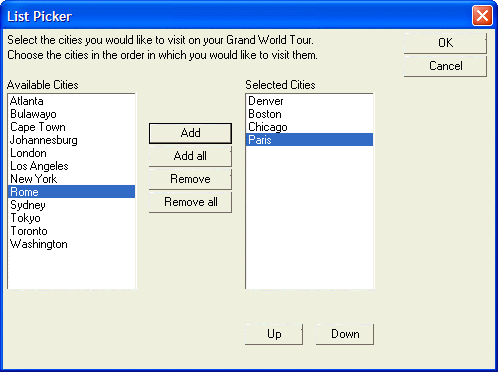

Using Events to Modify Arrays used in Dialog Box Controls
The following example displays a dialog with two list boxes, 'AvailableCities' and 'SelectedCities'. The buttons on the dialog allow the user to select from the list of available cities and place them in the selected cities list. The Up and Down buttons allow the user to change the order of the cities in the list.
The script makes extensive use of dialog box events.
list1 = "Boston,New York,Chicago,London,Cape Town,Sydney,Toronto,Los Angeles,Tokyo,Johannesburg,Bulawayo," list1 = list1 + "Washington,Denver,Atlanta,Paris,Rome" list1 = stritran(list1,",",crlf()) dim a_list1[100] as C a_list1.initialize(list1) a_list1.sort("ab") dim a_list2[100] as C dim list1_selected as N dim list2_selected as N list1_selected = 1 list2_selected = 1 flag_add = .t. flag_remove = .f. ui_dlg_box("List Picker",<<%dlg% {region0} Select the cities you would like to visit on your Grand World Tour.; Choose the cities in the order in which you would like to visit them.; {region1} {lf}; {region2} Available Cities; [.25,15list1_selected^#a_list1]; {endregion2}| {region20}{sp};{endregion20}| {region3} {lf}; {lf}; {lf}; <15Add?flag_add>; <15Add all?flag_add> ; <15Remove?flag_remove>; <15Remove all?flag_remove> {endregion3}| {region20}{sp};{endregion20}| {region4} Selected Cities; [.25,15list2_selected^#a_list2] ; {text=20text1}; {text=20text_prev}; <10Up?flag_remove> <10Down?flag_remove> {endregion4} {endregion1} {endregion0} | {region5} <15&OK>; <15&Cancel> {endregion5} %dlg%,<<%code% if a_dlg_button = "Add" then a_dlg_button = "" if list1_selected > 0 then first_empty_on_list2 = a_list2.first_empty() a_list2[first_empty_on_list2] = a_list1[list1_selected] a_list1.delete(list1_selected,1) list2_selected = first_empty_on_list2 'after adding an entry, move the focus up to previous city, 'unless you were already on the first city. if a_list1[list1_selected] = "" .and. list1_selected > 1 then list1_selected = list1_selected-1 else list1_selected = list1_selected end if 'turn on the Remove flags flag_remove = .t. 'if there are no more entries in list1, turn off Add flags if a_list1[list1_selected] = "" then flag_add = .f. end if end if end if if a_dlg_button = "Remove" then a_dlg_button = "" if list2_selected > 0 then first_empty_on_list1 = a_list1.first_empty() value_to_remove = a_list2[list2_selected] a_list1[first_empty_on_list1] = a_list2[list2_selected] a_list2.delete(list2_selected,1) a_list1.sort("ab") list1_selected = a_list1.find(value_to_remove) if list2_selected > 1 then list2_selected = list2_selected-1 else list2_selected = 1 end if if a_list2[list2_selected] = "" then flag_remove = .f. end if flag_add = .t. end if end if if a_dlg_button = "Up" then a_dlg_button = "" if list2_selected <> 1 then a_list2.move(list2_selected,list2_selected-1) list2_selected = list2_selected - 1 end if End if if a_dlg_button = "Down" then a_dlg_button = "" if list2_selected < a_list2.first_empty()-1 then a_list2.move(list2_selected,list2_selected+1) list2_selected = list2_selected + 1 end if end if If a_dlg_button = "Add all" then a_dlg_button = "" tempstring = a_list2.dump("r")+a_list1.dump("r") a_list2.clear() a_list2.initialize(tempstring) a_list1.clear() list2_selected = 1 flag_remove = .t. flag_add = .f. end if If a_dlg_button = "Remove all" then a_dlg_button = "" tempstring = a_list1.dump("r")+a_list2.dump("r") a_list2.clear() a_list1.initialize(tempstring) list1_selected = 1 a_list1.sort("ab") flag_remove = .f. flag_add = .t. end if %code%) |
This script produces this dialog:

Lesson 6: Events and Working with Arrays
Let's analyze how the Add button on the dialog works. Here is the event processing code for the Add button:
1. if a_dlg_button = "Add" then 2. a_dlg_button = "" 3. if list1_selected > 0 then 4. first_empty_on_list2 = a_list2.first_empty() 5. a_list2[first_empty_on_list2] = a_list1[list1_selected] 6. a_list1.delete(list1_selected,1) 7. list2_selected = first_empty_on_list2 8. 'after adding an entry, move the focus up to previous city, 9. 'unless you were already on the first city. 10. if a_list1[list1_selected] = "" .and. list1_selected > 1 then 11. list1_selected = list1_selected-1 12. else 13. list1_selected = list1_selected 14. end if 15. 'turn on the Remove flags 16. flag_remove = .t. 17. 'if there are no more entries in list1, turn off Add flags 18. if a_list1[list1_selected] = "" then 19. flag_add = .f. 20. end if 21. end if 22. end if |
In line 2, the a_dlg_button variable is set to a NULL value, which keeps the dialog open.
In line 4, we get the index value of the first empty slot in a_list2, the array that contains the names of the selected cities.
In line 5 we insert the current city in list1 into list2 at the location of the first empty slot in a_list2.
In line 6 we delete the city just selected from the list of available cities.
In line 7 we set the variable list2_selected to the index value of the city just inserted into a_list2. This causes the list box to highlight the name of the city. If not for this line, the list box would show the new city, but it would not be highlighted.
In line 10 to 14 we move the highlight up to the previous city in the list of available cities. If we are already on the first city, then we do not do anything.
In line 16 we set the flag_remove variable to .t., which enables the Remove and Remove All buttons, and the Up and Down buttons.
Next
Limitations
Desktop applications only